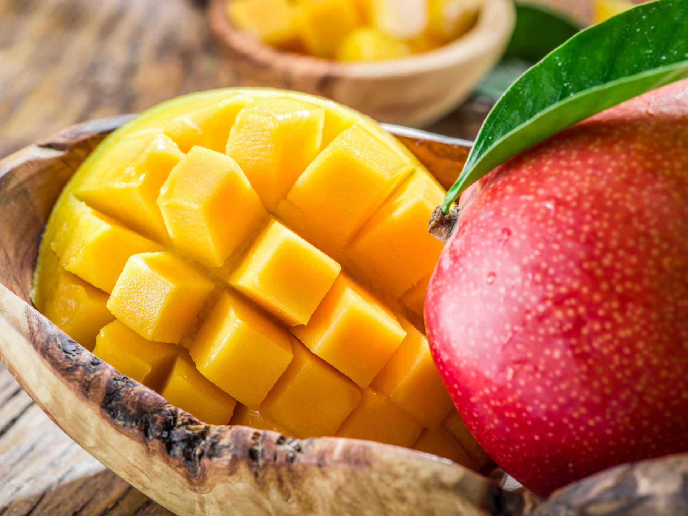
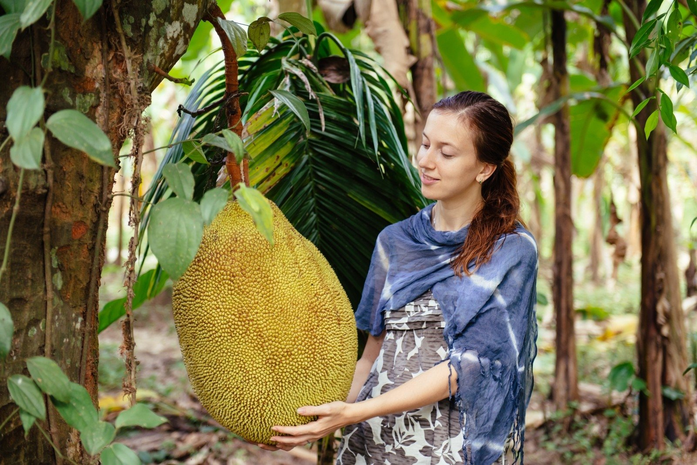
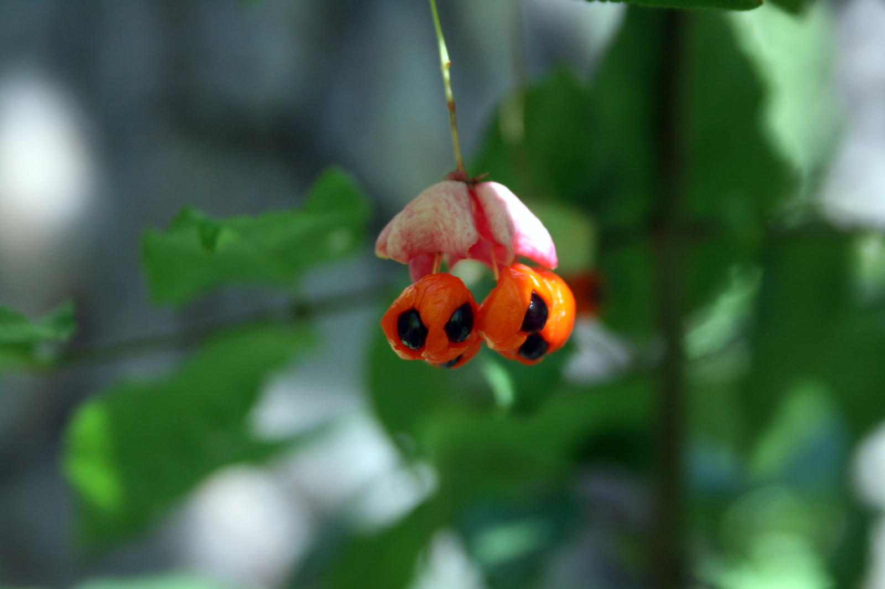

KAIP TINKAMAI LAIKYTI DŽIOVINTUS VAISIUS NAMUOSE - NAUDINGI PATARIMAI
2020.10.29 08:40
Pagrindinis Naudingi patarimai Skirtingi Išvaizda Kvapai Ligos Kenkėjai Namų ūkių problemos Pagrindinis Naudingi patarimai Skirtingi Išvaizda Kvapai Ligos Kenkėjai Pagrindinis Naudingi patarimai
Kaip tinkamai laikyti džiovintus vaisius namuose
Patyrę namų šeimininkės ruošiasi žiemai ne tik išsaugoti, bet ir džiovintus vaisius. Galų gale, tai ne tik vitaminai ir nauda, bet ir skanus vasaros kvapas. Džiovinti vaisiai gali būti dedami į kepinius, kompotai yra ruošiami žiemą, o jie valgomi tiesiog kaip desertas. Tačiau norint išsaugoti šį produktą per ilgus žiemos mėnesius, turite žinoti, kaip džiovinti džiovintus vaisius namuose.
Prieš išsiaiškinant, kaip, kur ir kur laikyti džiovintus vaisius, reikia išsiaiškinti, kurie džiovinti vaisiai gali ir turėtų būti nuimami žiemai. Jei parduotuvėje nusipirkote džiovintų vaisių, neturėsite problemų su saugojimu. Produktai džiovinti vaisiai yra apdorojami specialiais veiksniais, kurie atbaido kenkėjus, apsaugo produktą nuo pelėsių ir puvimo. Daugeliu atvejų, nepriklausomai nuo to, kaip juos saugote, jie visada turės blizgią patrauklią išvaizdą.
Žinoma, tokie džiovinti vaisiai yra mėsingi ir skanūs, bet, deja, jų visai nenaudojama. Tokie produktai, apdoroti reagentais, išlaiko savo vitaminus. Todėl jūs patys turite teisę pasirinkti, ar supirkti džiovintus vaisius, ar patys juos gaminti.
Jei gaminate džiovintus vaisius namuose, turėtumėte žinoti vieną taisyklę. Džiovinti vaisiai tinka ilgalaikiam sandėliavimui tik tuo atveju, jei jų sudėtyje yra ne daugiau kaip 25% drėgmės. Kaip tai patikrinti? Norėdami tai padaryti, išspauskite džiovintus vaisius rankoje. Jei jis sutrūksta, tai reiškia, kad jis gali būti laikomas, jei jis supjaustytas į gabalus, jis turi būti išdžiovintas.
Ką laikyti
Geriausia džiovinti džiovintus vaisius užplombuotoje pakuotėje. Sandėliavimui gali būti naudojamas plastikinis indas su sandariu dangčiu, stiklo indeliu arba plastikiniu maišu. Tačiau prieš džiovinant vaisius į hermetišką indą būtina patikrinti, ar visi gabalai yra tinkamai išdžiovinti? Jei uždaroje erdvėje gausite bent vieną vaisių, kuris nėra visiškai išdžiovintas, jis gali sugadinti visus kitus džiovintus vaisius. Tai gali sukelti puvimą ir pelėsius.
Džiovinti obuoliai ir kriaušės geriausiai laikomi audinių maišeliuose. Užkepkite drobinius maišelius sūdytame vandenyje (tai apsaugo džiovintus vaisius nuo vabzdžių), išdžiovinkite ir užpildykite džiovintais vaisiais. Periodiškai peržiūrėkite turinį taip, kad vaisiai ne puvtųsi. Jei į maišelį radote puvimo ar pjaustytų vaisių gabaliukus, geriausia juos išmesti, ir tuoj pat turėtumėte gaminti kompotą iš gretimų vaisių. Kartais džiovinti vaisiai rūšiuoti ir sumaišyti taip, kad jie išdžiūtų tolygiai ir neliptų vienas prie kito. Prieš sandėliuojant džiovintus vaisius, dar kartą patikrinkite, ar maišai yra sandariai susieti.
Kur laikyti
Laikyti džiovinti vaisiai turėtų būti tamsoje vėsioje vietoje. Geriausia laikyti indą su džiovintais vaisiais ant šaldytuvo apatinės lentynos - tai pakankamai vėsioje vietoje, kurioje kenkėjai negali daugintis. Geriausia apsaugoti džiovintus vaisius nuo tiesioginių saulės spindulių ir laikyti juos tamsioje vietoje.
Jei šaldytuve nėra pakankamai vietos džiovintiems vaisiams laikyti, galite juos įdėti į viršutinę virtuvės stalčių lentyną, kur dažnai nežiūrite. Atkreipkite dėmesį, kad kambaryje neturėtų būti didelė drėgmė. Geriausia įdėti į druskos ar sodos konteinerį šalia džiovintų vaisių paketo. Šios adsorbuojančios medžiagos puikiai sugeria drėgmę, apsaugo nuo džiovintų vaisių.
Kaip apsaugoti džiovintus vaisius nuo kenkėjų
Didžiausias pavojus saugant džiovintus vaisius yra kenkėjai. Įvairiuose džiovintuose vaisiuose, kiaušiniuose, kandiuose, lapų kokonuose ir kituose gyvūnuose mėgsta gyventi. Jei ant vaisių rasite vabzdžių, džiovintus vaisius reikia kruopščiai nuplauti ir džiovinti orkaitėje esant aukštai temperatūrai. Tokiomis sąlygomis miršta net vabzdžių lervos. Jei norite tęsti sandėliavimą, po plovimo, plovimo ir geležies (ypač kremuose) reikia kruopščiai išdžiovinti vaisius. Po incidento dažniau ir kruopščiau peržiūrėkite ir išvalykite džiovintus vaisius.
Jei bijo, kad džiovintiems vaisiams pasirodys vabzdžiai, į maišelį įdėkite pipirą ar baziliką. Kenkėjai netoleruoja šių kvapų. Be to, jei paruošiate džiovintų vaisių kompotą su džiovintais pipirmėčių šakelėmis, tai bus unikali aromatas.
Jei ištisus metus ant stalo yra šviežių, sveikų ir skanių produktų, tai yra geros namų šeimininkės rodiklis. Džiovinti vaisiai turi būti laikomi žemoje temperatūroje, tamsioje vietoje ir hermetiškoje talpykloje. Šios trys taisyklės padės apsaugoti ir išsaugoti maisto atsargas.
Žiūrėti vaizdo įrašą: Homemade Chicken Roll-Up. 4K (Spalio Mėn 2020).
Populiarios Temos
KvapaiOctober 29, 2020 Naudingi patarimai
October 29, 2020 Kenkėjai
October 29, 2020 Naudingi patarimai
October 29, 2020 Naudingi patarimai
October 29, 2020 Naudingi patarimai
October 29, 2020
Redaktoriaus Pasirinkimas
Ar galima avižiniai su žindymu?
Kaip plauti veidą: naudingi patarimai
Kaip valgyti nėštumo metu
Kaip nustoti mylėti vedusį vyrą: psichologo patarimas
Kaip atsikratyti vienatvės
Populiarios Kategorijos
Gyvūnai
Linijos iš modernios ir populiarios dainos sako: „Ar turite barzdą? Aš jums pasakysiu TAIP!“. Iš tiesų, barzdotų vyrų mada grįžta. Prieš porą dešimtmečių vyras buvo laikomas stilingu ir gerai prižiūrimu, jei jis buvo švarus. Šiandien galima rasti vis daugiau barzdotų stipresnės lyties atstovų. Skaityti Daugiau
Įdomios Straipsniai
Burokėlių sultys - nauda ir žala organizmui
October 29,2020Kaip alus veikia moters kūną
October 29,2020Kaip tinkamai laikyti džiovintus vaisius namuose
October 29,2020Populiarios Kategorijos
Naudingi patarimai Skirtingi Išvaizda Kvapai Ligos Kenkėjai Namų ūkių problemos GyvūnaiCopyright © 2020
Pagrindinis Naudingi patarimai Skirtingi Išvaizda Kvapai Ligos Kenkėjaihttps://freeconsumerreviews.org lt.freeconsumerreviews.org © Naudingi patarimai 2020
- SEGEBUTĖS UŽRAŠAI: Pitaja arba "Drakono vaisius"
- Sodo gėrybės - Sujunk 3 vaisius
- vaisius - Vikižodynas - Wiktionary
- Daržovės ir vaisiai - BARBORA
- Džiovinti vaisiai | Džiovintos uogos | Riešutai Jums
- Drakono vaisius arba Kertuotis – Tailando vaisius ...
- Egzotiniai vaisiai ir daržovės | MAXIMA | MAXIMA
- Durianas – Tailando vaisių karalius, smirdantis vaisius ...
- VAISIAUS ŽŪTIS
- vaisiai - išsamiai DELFI.lt
- SEGEBUTĖS UŽRAŠAI: Pitaja arba "Drakono vaisius"
„Misija – švari vasara“ skaičiuoja darbo vaisius . www.alkas.lt 2020 09 24 11:04 „Misija – švari vasara“ skaičiuoja rezultatus | lrv.lt nuotr. Vasaros pradžioje Valstybinė saugomų teritorijų tarnyba prisijungė prie pakuočių tvarkymo sumanymo „Misija – švari vasara“. Kadangi buvo pastebėta, jog paskelbus karantiną ...
- Sodo gėrybės - Sujunk 3 vaisius
Paspaudus vaisius turi būti labai minkštas, o žievė itin lengvai luptis. Jei sukate galvą, ką pagaminti iš avokado. Štai jums kelios idėjos. Vištienos salotos su mangais ir avokadais. Itin ...
- vaisius - Vikižodynas - Wiktionary
Geriausia apsaugoti džiovintus vaisius nuo tiesioginių saulės spindulių ir laikyti juos tamsioje vietoje. Jei šaldytuve nėra pakankamai vietos džiovintiems vaisiams laikyti, galite juos įdėti į viršutinę virtuvės stalčių lentyną, kur dažnai nežiūrite. Atkreipkite dėmesį, kad kambaryje neturėtų būti didelė drėgmė.
- Daržovės ir vaisiai - BARBORA
Durianas – Tailando vaisius, tajų kalba vadinamas Tu-Rian.Tai didžiulis vaisius, pasižymintis specifiniu kvapu, todėl tikrai pastebėsite ir užuosite durianus pardavinėjamus ne tik Bankoko gatvėse ar turguose, bet ir praktiškai visur Tailande.
- Džiovinti vaisiai | Džiovintos uogos | Riešutai Jums
Saldžiarūgščius vaisius saugojo piktos ir nuodingos širšės. Žiemos pradžia Lapkritis - rugsėjo anūkas, o spalio - sūnus. Jis dar ne žiema. Tai paskutinis rudens mėnuo. Piktų šalnų ir žvarbumo pradžia. Nematoma šalčio giltinė nuvirina pievas, laukus, paežeres. Nupurto spalio auksą beržynuose, užgesina raudonų klevų ...
- Drakono vaisius arba Kertuotis – Tailando vaisius ...
Deja, visas bergamotės gėris yra odelėje, pats vaisius yra rūgštus ir maistui nenaudojamas. Nedideli bergamočių medeliai dyglių auga Italijoje, Bergamo regione, žydi balandį smulkiais baltais ir salsvai kvepiančiais žiedais. Vaisiai panašūs į citrinas ir sveria apie 200 g. Jos prinoksta ir skinamos žiemą bei ankstyvą pavasarį ...
- Egzotiniai vaisiai ir daržovės | MAXIMA | MAXIMA
Kertuotis, geriau žinomas kaip drakono vaisius, tajų kalba vadinamas Gao Mung Gorn, yra vienas iš Tailando vaisių, kurių tiesiog būtina paragauti keliaujant į Tailandą. Drakono vaisius yra iš tikrųjų išskirtinai atrodantis vaisius ir savo pavadinimą yra gavęs būtent dėl išskirtinės išvaizdos.
- Durianas – Tailando vaisių karalius, smirdantis vaisius ...
Blenderyje sumaltas drakono vaisius tapo gličia tyre, kuri nepasižymėjo skoniu, bet suputojo ir priminė šampūną su juodais krisleliais. Teko tą tyrę stipriai skiesti ananasų ir apelsinų sultimis, kol skonis tapo patrauklus ir nesijautė glitumo, tačiau ir pitajos skonio visai nesijautė. Nepatariu pitajos naudoti gėrimams.
- VAISIAUS ŽŪTIS
Maisto ir kitų kasdienių prekių parduotuvė internete. Informuojame, kad šioje svetainėje yra naudojami slapukai (angl. cookies).
- vaisiai - išsamiai DELFI.lt
Džiovinti vaisiai ir uogos ne tik sveikas ir maistingas užkandis praalkus, bet ir puikus įvairių maisto patiekalų pagardas, kurį įsigysite už puikią kainą! Įsigykite jau pamėgtų džiovintų vaisių ir uogų bei atraskite naujus skonius.
„Misija – švari vasara“ skaičiuoja darbo vaisius . www.alkas.lt 2020 09 24 11:04 „Misija – švari vasara“ skaičiuoja rezultatus | lrv.lt nuotr. Vasaros pradžioje Valstybinė saugomų teritorijų tarnyba prisijungė prie pakuočių tvarkymo sumanymo „Misija – švari vasara“. Kadangi buvo pastebėta, jog paskelbus karantiną ...
Paspaudus vaisius turi būti labai minkštas, o žievė itin lengvai luptis. Jei sukate galvą, ką pagaminti iš avokado. Štai jums kelios idėjos. Vištienos salotos su mangais ir avokadais. Itin ...
Geriausia apsaugoti džiovintus vaisius nuo tiesioginių saulės spindulių ir laikyti juos tamsioje vietoje. Jei šaldytuve nėra pakankamai vietos džiovintiems vaisiams laikyti, galite juos įdėti į viršutinę virtuvės stalčių lentyną, kur dažnai nežiūrite. Atkreipkite dėmesį, kad kambaryje neturėtų būti didelė drėgmė.
Durianas – Tailando vaisius, tajų kalba vadinamas Tu-Rian.Tai didžiulis vaisius, pasižymintis specifiniu kvapu, todėl tikrai pastebėsite ir užuosite durianus pardavinėjamus ne tik Bankoko gatvėse ar turguose, bet ir praktiškai visur Tailande.
Saldžiarūgščius vaisius saugojo piktos ir nuodingos širšės. Žiemos pradžia Lapkritis - rugsėjo anūkas, o spalio - sūnus. Jis dar ne žiema. Tai paskutinis rudens mėnuo. Piktų šalnų ir žvarbumo pradžia. Nematoma šalčio giltinė nuvirina pievas, laukus, paežeres. Nupurto spalio auksą beržynuose, užgesina raudonų klevų ...
Deja, visas bergamotės gėris yra odelėje, pats vaisius yra rūgštus ir maistui nenaudojamas. Nedideli bergamočių medeliai dyglių auga Italijoje, Bergamo regione, žydi balandį smulkiais baltais ir salsvai kvepiančiais žiedais. Vaisiai panašūs į citrinas ir sveria apie 200 g. Jos prinoksta ir skinamos žiemą bei ankstyvą pavasarį ...
Kertuotis, geriau žinomas kaip drakono vaisius, tajų kalba vadinamas Gao Mung Gorn, yra vienas iš Tailando vaisių, kurių tiesiog būtina paragauti keliaujant į Tailandą. Drakono vaisius yra iš tikrųjų išskirtinai atrodantis vaisius ir savo pavadinimą yra gavęs būtent dėl išskirtinės išvaizdos.
Blenderyje sumaltas drakono vaisius tapo gličia tyre, kuri nepasižymėjo skoniu, bet suputojo ir priminė šampūną su juodais krisleliais. Teko tą tyrę stipriai skiesti ananasų ir apelsinų sultimis, kol skonis tapo patrauklus ir nesijautė glitumo, tačiau ir pitajos skonio visai nesijautė. Nepatariu pitajos naudoti gėrimams.
Maisto ir kitų kasdienių prekių parduotuvė internete. Informuojame, kad šioje svetainėje yra naudojami slapukai (angl. cookies).
Džiovinti vaisiai ir uogos ne tik sveikas ir maistingas užkandis praalkus, bet ir puikus įvairių maisto patiekalų pagardas, kurį įsigysite už puikią kainą! Įsigykite jau pamėgtų džiovintų vaisių ir uogų bei atraskite naujus skonius.
  